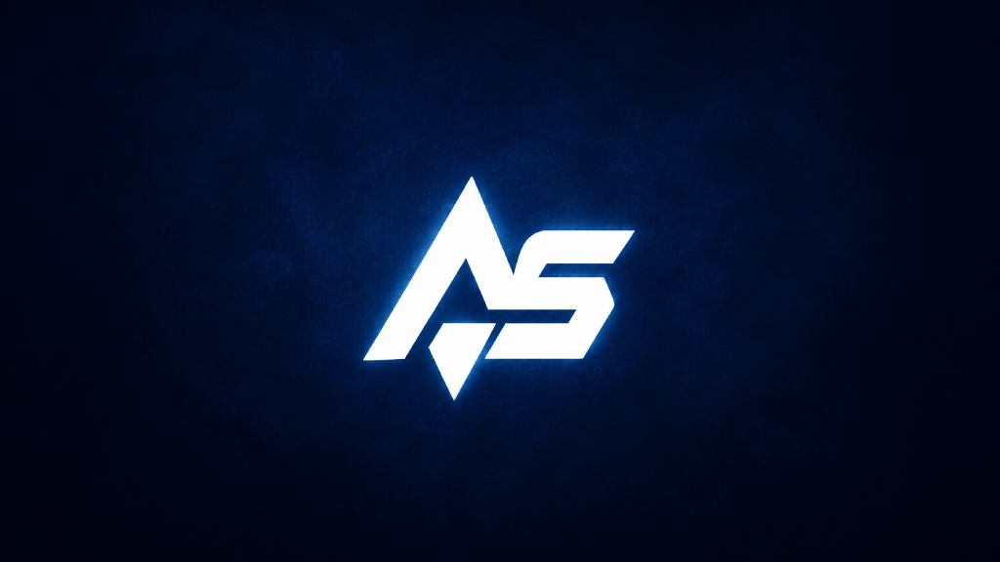

مكتبة موحدة
اجمع ألعابك من المنصات المختلفة في واجهة واحدة.
مكتبة ألعاب فخمة تجمع ألعابك من مختلف المنصات، مع تشغيل الألعاب والإحصائيات والتصوير.
Windows 10/11 • x64 • ملف تشغيل واحد
اجمع ألعابك من المنصات المختلفة في واجهة واحدة.
شغّل الألعاب من داخل AS Game Hub بدون البحث عنها كل مرة.
تابع وقت اللعب والجلسات والألعاب الأكثر استخداماً.
التقاط الشاشة وحفظ الصور في مجلد مخصص.
اضغط التحميل وخذ ملف EXE واحد جاهز للتشغيل.